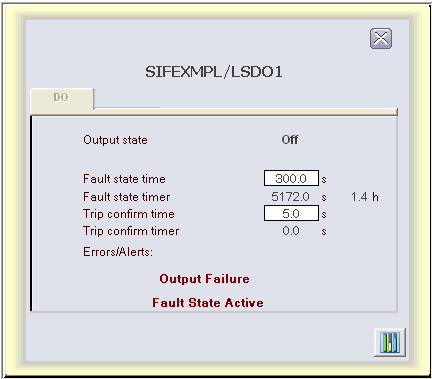

LSDO faceplate
The faceplate display for the LSDO function block, SIS_DO_fp, is opened in runtime from a button on the DO dynamo on the primary (or other) display. The faceplate display consists of a tabbed control with a single tab, a "close picture" button, a pushpin button, an "open module faceplate" button, and the function block path. The pushpin button appears when multiple faceplate capability has been enabled in UserSettings.grf. When multiple monitor capability has been enabled, a display selector appears to the right of the pushpin.

The following items are contained on the LSDO function block faceplate:
Output state - A value field and text label for OUT_D_STATE.
Reset button - Visible below the output state text when the state is "Off - Ready to Reset."
Fault state time - A data entry box and text label for FSTATE_TIME.
Fault state timer - A value field and text label for FSTATE_TIMER. A click on the value field allows a secure write to FSTATE_TIMER. When its value is non-zero, the value of FSTATE_TIMER_H appears to the right.
Trip confirm time - A data entry box and text label for CFM_TRIP_TIME.
Trip confirm timer - A value field and text label for CFM_TRIP_TIMER.
Errors/Alerts - A text label that is always visible.
The following messages may appear under Errors/Alerts, depending upon which bits are set in DO_ALERTS or BLOCK_ERR:
Failed to confirm following a command to trip - Visible if that bit is set in DO_ALERTS.
Confirmed Off while commanded On - Visible if that bit is set in DO_ALERTS.
Output Failure - Visible if that bit is set in BLOCK_ERR.
Input Failure/Bad PV - Visible if that bit is set in BLOCK_ERR.
Fault State Active - Visible if that bit is set in BLOCK_ERR.